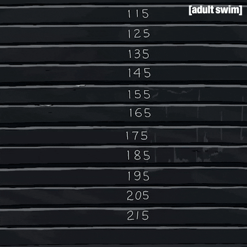

A musculação é um treino de força que consiste no levantamento de pesos, seja com halteres ou aparelhos específicos. Seu objetivo é a hipertrofia dos músculos.
Porém, a boa execução dos exercícios e alguns truques fazem a diferença para obter melhores resultados. E, assim, explica o porquê de seu amigo, que começou a fazer exercícios na mesma época que você, já estar com o corpo bem mais definido.
Especialistas comentam, portanto, os benefícios da musculação para além da massa muscular e também dicas para obter melhores resultados e cuidados necessários para não prejudicar a saúde.
- Melhora a postura corporal
A prática de musculação fortalece a musculatura que sustenta a coluna, melhorando a postura e diminuindo as dores nas costas por exemplo.
- Diminui a quantidade de gordura
Quando a musculação é praticada de forma regular, intensa e acompanhada de uma alimentação saudável, o corpo passa a queimar mais gordura e aumentar a massa muscular, acelerando o metabolismo e favorecendo o gasto calórico mesmo quando se está parado.
A perda de gordura, além de promover benefícios estéticos e aumentar a auto-estima, previne uma série de doenças, como obesidade e aterosclerose, por exemplo.
- Tonifica os músculos
A tonificação dos músculos é uma das "consequências" visíveis da prática da musculação. A tonificação acontece devido à perda de gordura, aumento da massa muscular e fortalecimento da musculatura o que além de representar ganho de força, permite que haja o desaparecimento das celulites, por exemplo.
No entanto, para que os músculos fiquem mais durinhos, é preciso ter uma hidratação correta e alimentação balanceada.
- Combate problemas emocionais
Por promover a liberação da endorfina, que é o hormônio responsável pela sensação de bem-estar, a musculação pode ser uma ótima alternativa para aliviar o estresse, diminuir os sintomas de ansiedade e, até mesmo, combater a depressão
- Diminui o risco de diabetes
O risco de diabetes pode ser diminuído com a prática da musculação porque o organismo passa utilizar a glicose circulante como fonte de energia e o açúcar que se encontra em excesso no sangue passa a ser armazenado na forma de glicogênio, que é utilizado em outros processos metabólicos
Voltar Pagina principal